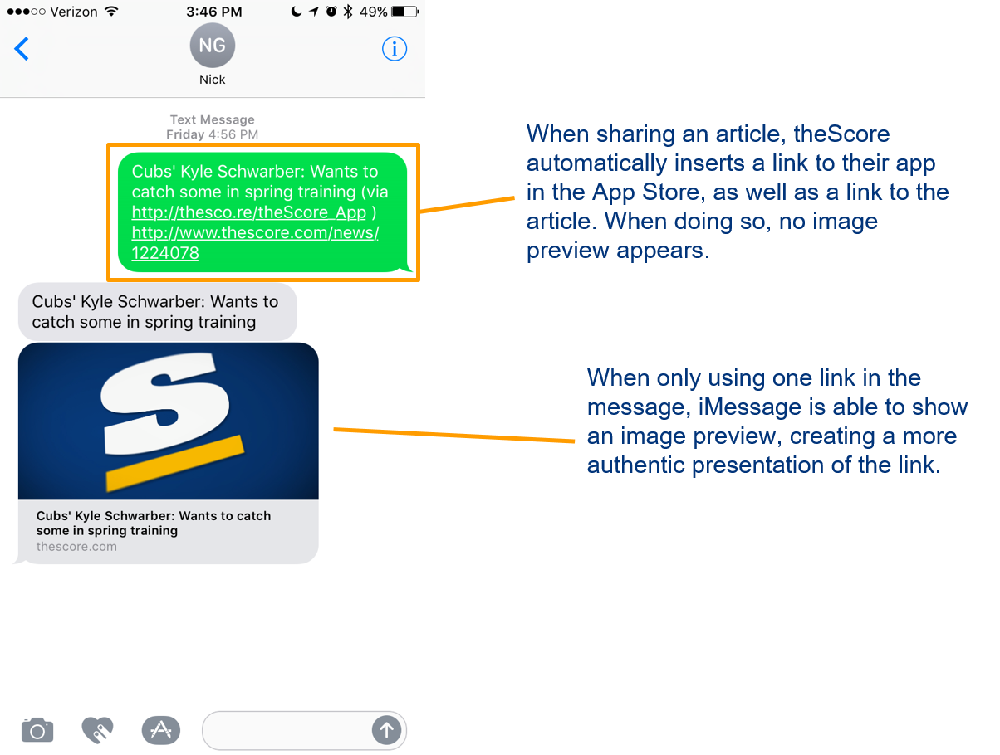
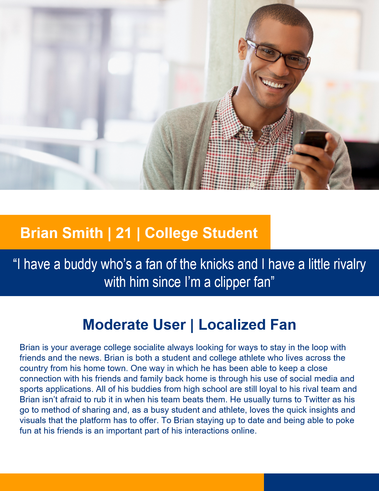
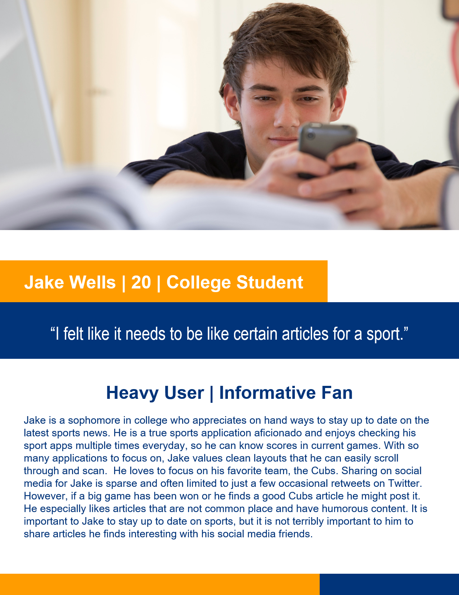
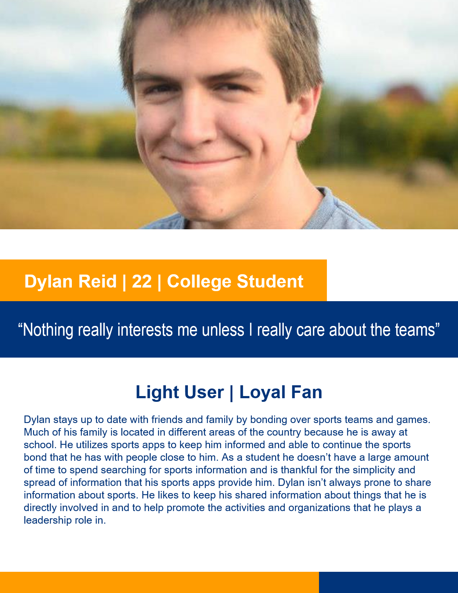
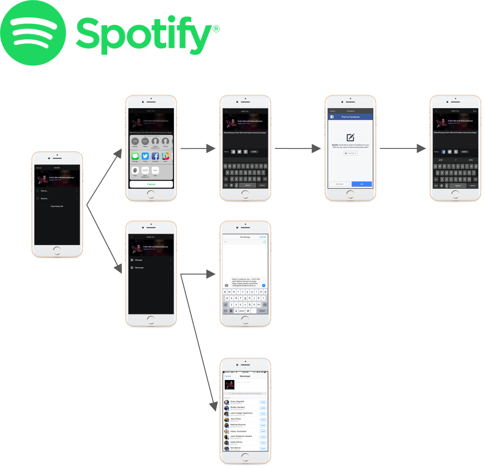
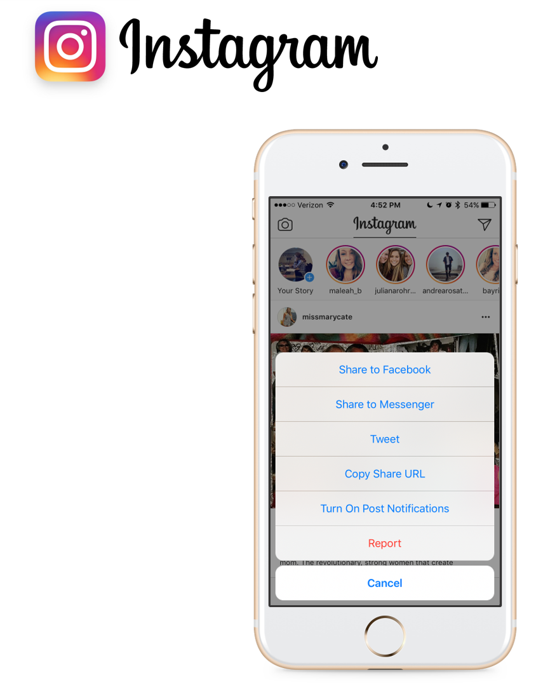
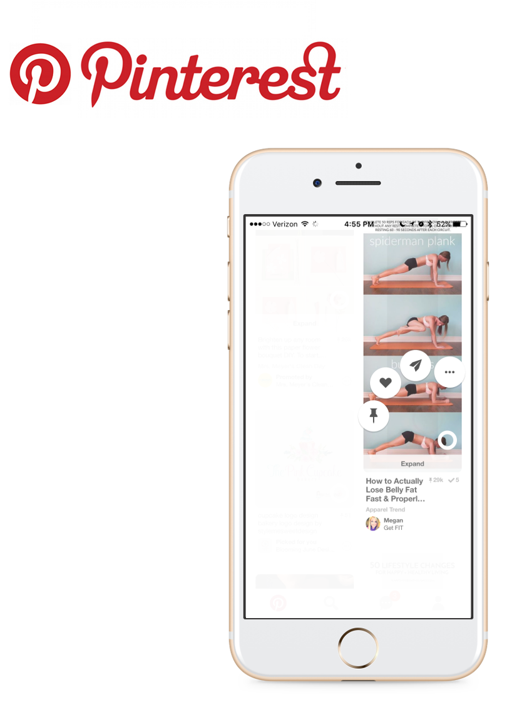
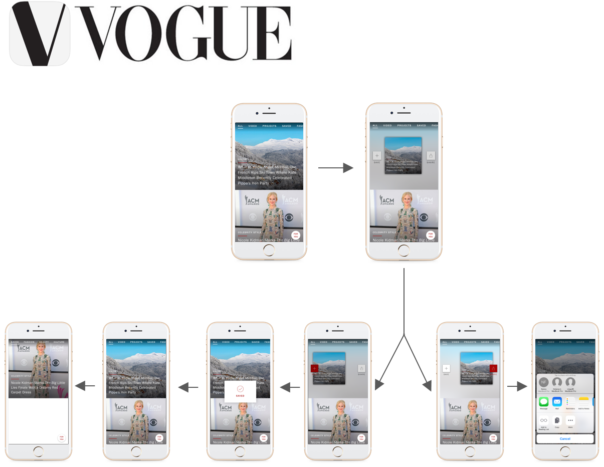

As part of our Human-Centered Design Experience Studio we worked with theScore, a mobile-first sports media company based out of Toronto, Canada
Team Members: Alaina Creager, Elizabeth Finley, Joe Hoggat, Nick Gould
Problem statement: theScore needs to understand why users are not sharing content and develop a strategy to increase the use of its application.
theScore.com

The Research
We planned to devote the majority of the semester to researching users' behavior: how they interacted with the application, what motivates them to share articles, and to whom they share them.
-
> The statistics
theScore was able to provide us some statistics on the current usage of the sharing functionality within their iOS application.
1.3 shares/day
63% of users close the share model and cancel/close it without sharing
29% of shares are over SMS text messaging
5% Facebook
3% are to external applications (Twitter, email, etc.)
-
> The competitive analysis
Lead: Alaina
Objective: Analyze not only theScore's app, but also their competitors. This gave us insight into industry standards and existing solutions to the problem.
Analysis: We discovered four major focus areas to research more:
- The Feed: the way in which articles are first presented to the user
- Sharing icons: the icons that represent sharing to the user
- Auto-generated messages: messages that are automatically typed out for the user when sharing
- Messaging: the way in which articles are shared when using a messaging application such as iMessage
-
> Investigating link previews
Lead: Nick
During the competitive analysis, the team noticed a lack of link previews within iMessage for only theScore app. Looking at the source code of theScore.com, we realized that theScore was using the Open Graph Protocol to create these previews, of which was coded correctly.

On further research, we learned that iMessage is unique in the fact that if more than one link is in the message, iMessage will not show a link preview because it does not know what link to show the preview for. Other messaging applications such as Facebook Messenger will choose the first link in the message to show a preview for.
We decided to test this by sending a message with one only one link. In this case, iMessage showed a link preview. However, when we sent the same message with two links, it did not show a preview.
When relaying this to our sponsor at theScore, we learned that this was an issue they had noticed, but had never found out the reason why. -
> The literature review on the psychology of sharing
We conducted a literature review to try to understand the psychology of sharing more. We wanted to learn why users want to share and to whom they want to share to. By better understanding their intent, we could work to design an interface that accommodated their wants and needs.
- For millennials, which covers most of the target audience, there is no significant difference in social media usage across genders
- Men censor their content they share online more than women
- Users with more diverse friends censor less
- People censor when their audience is harder to define, and people censor more when the relevance of the communication "space" is narrower
- People generally post to strengthen relationships, not cause arguments
- women have higher loyalty to sports brands and sports apps
- Mobile users are more likely to post to Facebook & Twitter than any other social network
- There are 5 major factors for contribution online: purposive value, self-discovery, entertainment, enhancing social status, and maintaining relationships
- Receiving feedback from friends on a post, perhaps similar to receiving a gift, creates indebtedness and calls for reciprocation

Testing
Revisiting our cumulative previous research, we determined four subjects to conduct testing on: call-to-action, images, titling/wording, and icons
-
> The rationale
When designing our testing, we hoped to find:
- Time on task for sharing
- Minimum amount of interaction necessary to successfully share
- User task flow for sharing
- Understanding of user motivation
- User sharing tendencies
-
> The call-to-action
Lead: Joe
theScore's action buttons within the feed were all white icons for messaging, facebook, twitter, and the iOS share sheet. We tested the shapes of these icons to determine if changing the shape of the icon would influence users' behavior.
-
> The colors
Lead: Joe
theScore's action buttons within the feed were all white icons for messaging, facebook, twitter, and the iOS share sheet. We tested the colors of these icons to determine if changing the color of the icon would influence users' behavior.
One major influence on this testing was accessibility. During our research, we found 1/12 men are colorblind. Men being the target audience of theScore, we kept this in mind when making color choices.
We found that the users preferred filled in buttons with rounded corners. The described these buttons as welcoming, smooth, and comfortable. -
> The icons
Lead: Elizabeth
theScore uses the iOS share sheet icon for external sharing, however our research showed that the share sheet confusing to many, and users don't understand what the icon stands for. We decided to test what icon would be best by conducting preference testing with multiple share icons; some made by us, others, icons that are already used in other apps.
We found that 63% of users ranked the word "Share" as the most understandable icons for sharing, and only 43% of users ranked the iOS share sheet icon as the second most understandable icon. -
> The interview
Lead: Alaina
We conducted interviews with users to ask them about their habits using sports news applications and their social media habits. We also had the users interact with theScore and their primary competitor, ESPN. We conducted preference testing on the two news feeds.
-
> The demo
Lead: Alaina
We had users try to complete a few sharing tasks with both theScore and their primary competition, ESPN. We then analyzed each user's task flow, the time on task, and possible rationale for their behaviors.
-
> The images
Lead: Nick
We also conducted multistage preference testing with different styles of images. We hoped to determine if users, either consciously or subconsciously interacted more with specific style of images.
We found that the style of the image was minor when compared to the content of the image.
The Design
All of our research and testing educated our decisions in the design phase. Our goal was to develop multiple UI designs, and then test them further to determine which design, or which elements of each design, were best for theScore.
-
> Personas
We developed three personas based on our target audience:
- Jake Wells: a 20 yr old college student. Heavy user & informative fan.
- Brian Smith: a 22 yr old college student. Moderate user & localized fan.
- Dylan Reid: a 22 yr old college student. Light user & loyal fan.
 -
> Setting goals
theScore's users need sharing to be quick, intuitive, compelling, and attractive.
This can be accomplished by:- Minimizing the use of the share sheet
- Icons + words
- Branded colors
- Rounded rectangle call-to-actions
- Micro interactions
- Animation/movement
- Dynamic options
-
> Competitive analysis round #2
With these new goals in mind, we revisited other applications looking for unique sharing taskflows that we found matched our new goals. Specifically, Spotify, Instagram, Pinterest, and Vogue offered some interesting sharing processes.
 -
> Sketching
Individually, the team worked to develop UI sharing ideas for theScore app. We then came together to refine them into multiple different prototypes.
-
> Prototyping
We used Adobe XD to develop our sketching ideas into interactive prototypes we could use for testing. We developed 3 prototypes: 2 different taskflows for sharing from the news feed, and 1 new way of sharing from inside an article
-
> A/B/C testing
We asked users to complete a set of tasks with each prototype as well as the current theScore app:
- Share the top article to Facebook
- Share the same article to Messenger
We randomized the order of the tasks from each user and recorded time-on-task, audio recorded their sessions, and had an exit interview with each participant in which we asked about their likes/dislikes of each prototype/app.
-
> In-article concept testing
Another round of A/B testing, the in-article prototype was tested against the current theScore app. We recorded time-on-task, audio recorded their sessions, and had an exit interview with each participant in which we asked about their likes/dislikes of each prototype/app.
-
> Design recommendations
Our findings led us to a list of design recommendations for theScore to increase the sharing of their articles inside their application:
- Call-to-action: action buttons should be filled in rounded rectangles using the brand colors of each social network
- Color: theScore's brand colors are sufficient for the color-blind population, and theScore should avoid changing them
- Icon choice: the share button should be the word "Share" with the iOS share sheet icon to the left of it
- Guided process: the sharing process should be a guided process, similar to the "guided process" prototype we developed. This process was the least confusing to users and they reported the highest levels of satisfaction with it
- Share wheel: we recommend using a share wheel for sharing in-article, similar to our "Wheel Sharing" prototype
- We recommend further testing comparing the "Guided Process" and "Wheel Sharing" prototypes. Due to the contrasting style of the two and where they are designed to share from, we recommend using a Likert system to assess how hard the users believe and find sharing to be. We developed a more detailed protocol for theScore to use to do this.